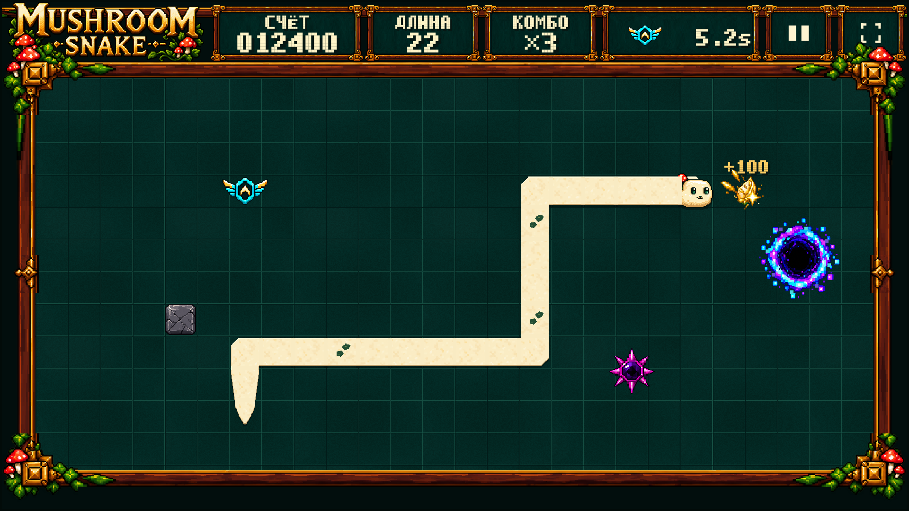
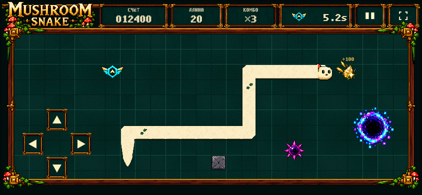
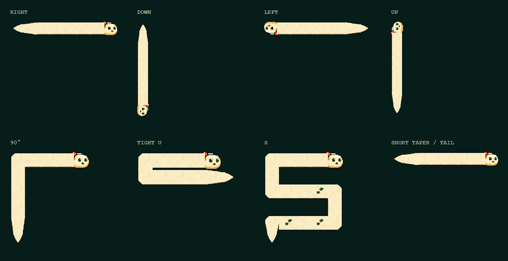
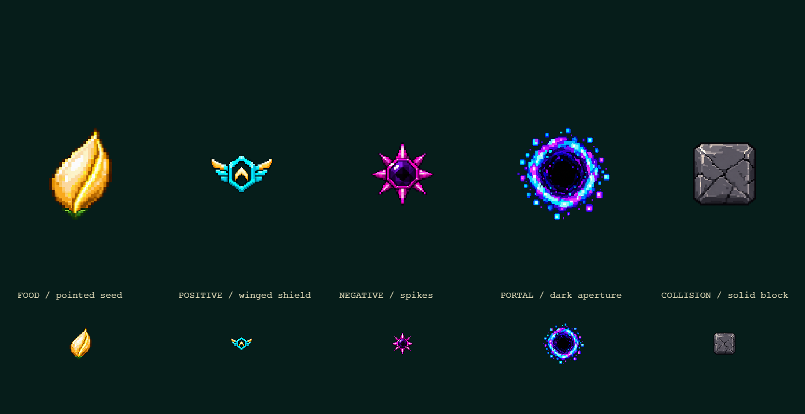
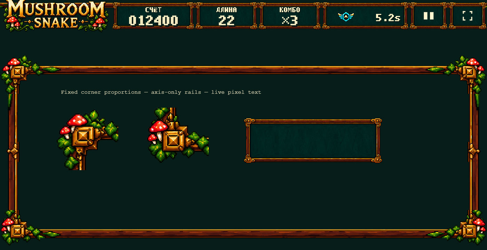
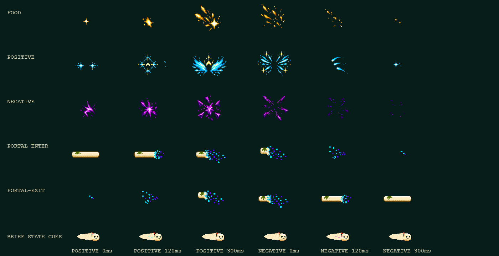

ISOLATED VISUAL PROOF • NO MOVING GAMEPLAY • NO PUBLICATION
TARGET → V3 PROOF
Новые independently generated ImageGen masters + собственная raster manufacture. Target-файлы показаны целиком только на этой review-странице: runtime/builder их не читают. Клик по изображению открывает полный размер.
Открыть live visual proof · QA / deviations · ImageGen prompts
Desktop — proportions, cabinet, field, Snake
 TARGET — authoritative, full original image
TARGET — authoritative, full original image

V3 PROOF — real browser capture, 1920×1080
Mobile landscape — near-full-width field, individual D-pad
 TARGET — authoritative, full original image
TARGET — authoritative, full original image

V3 PROOF — real browser capture, 844×390
Other required viewports
New kit — native renderer sheets

Snake anatomy — one new sprite family

Object grammar — large and native-scale samples

HUD/frame — independent masters, fixed corner proportions

VFX — food, positive, negative, portal enter/exit; 6 frames each
Human approval gate
Визуальное совпадение не объявляется автоматически. Материалы и композиция приблизились к target, но pixel density, точная форма головы/поворотов, богатство moss ornament и детализация portal всё ещё различаются. Этот proof не подключён к gameplay и не опубликован. Следующий шаг — ваше визуальное решение.